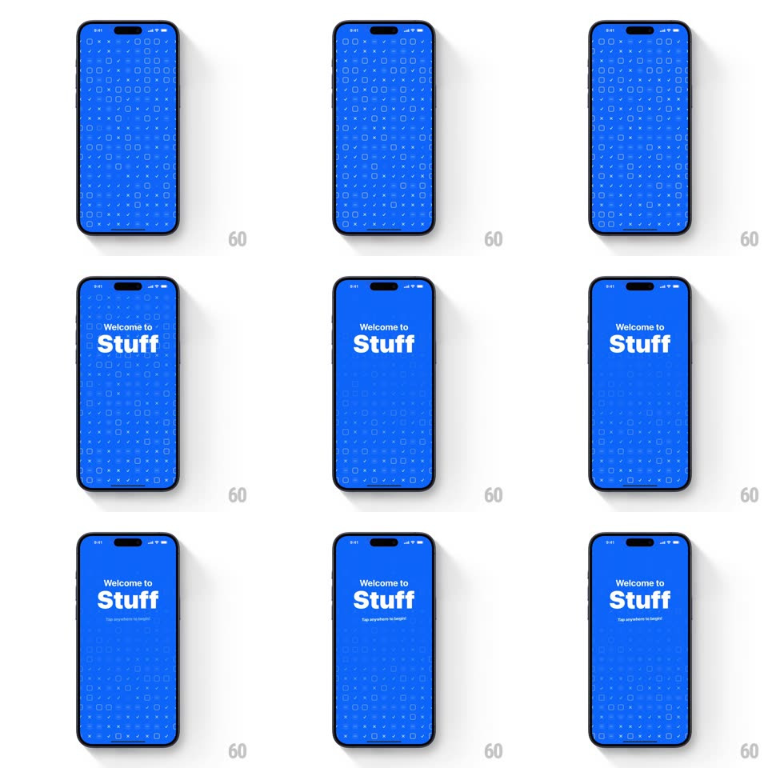

Media
Frame-by-frame

Rebuild this interaction 1:1: Stuff's intro - a saturated blue screen fills with a scattered grid of outlined checkbox squares (some crossed with X marks), then "Welcome to Stuff" springs in and "Tap anywhere to begin" appears.

Rebuild this interaction 1:1: Stuff's intro - a saturated blue screen fills with a scattered grid of outlined checkbox squares (some crossed with X marks), then "Welcome to Stuff" springs in and "Tap anywhere to begin" appears. ## Integration Integration: stack-agnostic spec - springs given as stiffness/damping, timed motions as duration + curve; map every value to your framework and animation library of choice. ## Scene A full-bleed electric blue splash. The decoration is a loose grid of small rounded-square checkbox outlines across the whole screen, a subset marked with X strokes; the density fades out toward the bottom. Centered white type: "Welcome to" over a bold "Stuff"; small caption "Tap anywhere to begin!" appears last. ## Motion spec Pattern: staggered field-in + type spring. - The blue field wipes in first (200ms). - Checkboxes populate in a randomized stagger: each square scales 0 -> 1 (spring ~500/24, 250ms) with squares appearing center-out, ~8ms apart per square - the grid "condenses" onto the screen over ~800ms. - X marks draw themselves inside their squares (stroke draw, 200ms each) slightly after their square lands. - "Welcome to" rises in (translateY 20pt -> 0, fade, 400ms), then "Stuff" springs in larger (scale 0.8 -> 1, spring ~340/18, slight overshoot, 450ms). - "Tap anywhere to begin!" fades in 300ms later. ## Calibration - Checkbox density is even across the top two-thirds, dissolving to empty blue at the bottom - the screen breathes below the title. - Keep every spring the same family - the playfulness comes from stagger, not mixed curves. ## Reduced motion Grid and type fade in together, no stagger or stroke-draw. ## Don't miss - Some X marks sit in squares, some float as lone crosses - the mix keeps it handmade. - The bottom edge of the grid feathers out (opacity ramp), no hard cutoff.